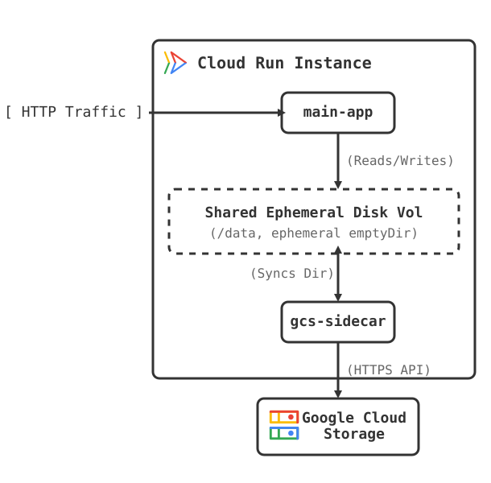

Cloud Run GCS Directory Sync
I have built a Cloud Run GCS Directory Sync sidecar. It is a lightweight, robust, and highly optimized Google Cloud Run sidecar container that synchronizes an ephemeral disk shared volume (emptyDir) with Google Cloud Storage (GCS).
This is a prototype of a persistent filesystem with full POSIX compliance that delivers the exact same performance characteristics as a local disk, since it reads and writes directly to local ephemeral /data mounts.

How it works
This sidecar implements a highly responsive bidirectional and event-driven synchronization pattern designed for stateless containers that need access to persistent, shared file systems:
- On Startup: It downloads all files from a specified GCS bucket/prefix into the shared directory. It blocks the main application's startup until the initial download is 100% complete using a startup probe.
- On File System Changes: It uses an event-driven
fsnotifyfile system watcher to track file creation, modification, deletion, and renaming events in real time, executing a debounced upload sync within 2 seconds of filesystem inactivity. - Periodically: It periodically scans the local shared directory as a robust fallback and uploads new or modified files to GCS using file size and MD5 hash comparisons to perform high-performance delta uploads.
- On Shutdown: It traps termination signals sent by Cloud Run, pauses active ticker runs, and executes a final, comprehensive upload sync before gracefully exiting.
Design constraints
There are some important constraints to be aware of when using this prototype:
- Strict Single-Instance Scaling: The Cloud Run resource attaching to this disk MUST be configured with a maximum of 1 active instance (
maxScale: "1"). This system is designed as a single-writer/single-reader environment. - Best-Effort Synchronization: Data persistence is not absolutely guaranteed. Edge cases can occur, leading to instances where local files are not synced up to Google Cloud Storage.
For more details, deployment instructions, and the source code, check out the GitHub repository.